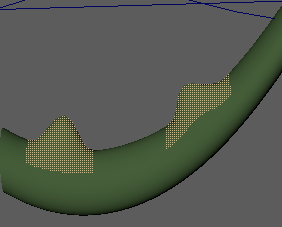

通过“固化”(Solidify)变形器，您可以从变形中排除几何体的特定部分（例如，当要保持龙的变形尾部上的尖刺时）。
将固化变形器应用于对象
- 在已应用变形的对象上，使用组件标记选择要保持实体的区域。有关如何使用组件标记创建可编辑几何体的特定“孤岛”的信息，请参见为几何体指定组件标记(Assign Component Tags to geometry)。

选择为组件标记的几何体区域
- 选择。
- 若要调整固化变形器参数，请选择“变形 > (创建)固化”(Deform > (Create) Solidify) >
 以打开固化选项(Solidify Options)。
以打开固化选项(Solidify Options)。
“固化”(Solidify)变形器将应用于几何体。
调整变形区域的大小

使用“固化比例”(Solidify Scale)选项调整了变形尖刺的大小
“固化”(Solidify)变形器“比例”(Scale)选项可用于控制孤岛的大小。
- 在已应用“固化”(Solidify)变形器的几何体上，打开属性编辑器(Attribute Editor)，然后选择相应几何体的选项卡（例如，“尾形”(tailshape)）。
- 展开“组件标记”(Component Tags)构件，在“组件标记”(Component Tags)表（您应用了“固化”(Solidify)变形器）中的“组件标记”(Component Tag)上单击鼠标右键，然后选择“选择组件”(Select Components)。
- 现在，切换到“固化”(Solidify)选项卡，向下滚动到“比例属性”(Scale Attributes)区域，然后尝试使用“法线比例”(Normal Scale)和“切线平面比例”(Tangent Plane Scale)滑块。有关设置的说明，请参见固化选项(Solidify Options)。